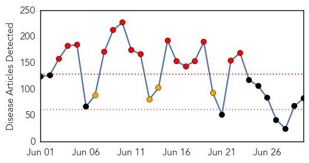
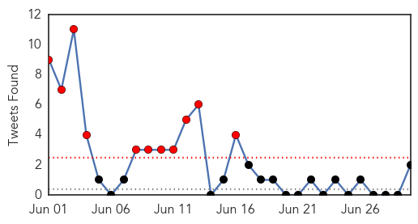

30 Day Trends
Web: 15 alerts, 4 warnings
Twitter: 7 alerts, 9 warnings
Top Articles:
- 0.999
- Patient free of MERS virus but will remain quarantined in Thailand - Regional
- 0.997
- South Korea reports one MERS death, no new cases
- 0.996
- Thailand's First MERS Case Declared Free of Deadly Virus
- 0.993
- S. Korea cautiously reports no new MERS cases or deaths
- 0.992
- MERS victims’ families suffer from depression
- 0.992
- Third day with no new Mers cases in South Korea, Government & Economy
- 0.991
- Third day with no new MERS cases in S. Korea – BorneoPost Online
- 0.987
- MERS outbreak: South Korea goes third day with no new cases
- 0.967
- Tularemia cases on the rise, rabbit with infection dies in El Pa - KOAA.com
- 0.967
- Dog, rabbit infected with tularemia in El Paso County
- 0.955
- CHP investigates first case of Japanese encephalitis in 2015
- 0.953
- Cedar Rapids, Iowa News, Sports, and Weather
- 0.947
- 2 Promising Treatments Identified By Researchers
- 0.917
- Chicago Tribune
- 0.917
- Chicago Tribune
- 0.917
- Chicago Tribune
- 0.917
- Chicago Tribune
- 0.917
- Chicago Tribune
- 0.917
- Chicago Tribune
- 0.917
- Chicago Tribune
- 0.917
- Chicago Tribune
- 0.917
- Chicago Tribune
- 0.917
- Chicago Tribune
- 0.917
- Chicago Tribune
- 0.917
- Chicago Tribune
- 0.917
- Chicago Tribune
- 0.917
- Chicago Tribune
- 0.917
- Chicago Tribune
- 0.917
- Chicago Tribune
- 0.917
- Chicago Tribune
- 0.917
- Chicago Tribune
- 0.917
- Chicago Tribune
- 0.917
- Chicago Tribune
- 0.917
- Chicago Tribune
- 0.917
- Chicago Tribune
- 0.917
- Chicago Tribune
- 0.913
- Two rabid bats found in Weber County
- 0.910
- The world windows to Thailand
- 0.883
- Ciguatera Fish Poisoning In Florida Underreported
- 0.882
- Utah health officials warning residents after rabid bat found
- 0.864
- 1000 people likely sickened by fecal matter in French mud run
- 0.823
- Quarantine for 20 Mers-risk people in Thailand ends
- 0.822
- KUNA : Kuwait bans live bird imports from Ghana
- 0.799
- SR airport's only thermal scanner ‘broken’, National, Phnom Penh Post
- 0.780
- University of Oklahoma professor finds key mosquito protein for development of new malaria vaccine
- 0.772
- Florida bacteria alert: Beware of warm saltwater if you have open cuts
- 0.737
- Kuwait bans live bird imports from Ghana - Kuwait Times
- 0.732
- Salmonella from frozen chicken hits 44 in Canada
- 0.731
- More people in Florida sickened by toxin in tropical reef fish than previously reported
- 0.728
- UNCOVERING LYME DISEASE: THE HUNTER LINK
Showing top 50 articles...
Top Tweets:
- 0.660
- Cuba es el primer país en el mundo en recibir la validación de OMS por haber eliminado la transmisión madre a hijo del VIH y sífilis
- 0.604
- .@OPSOMS ha trabajado en Cuba y otros países de las Américas para eliminar la transmisión vertical de VIH y sífilis congénita
Web/News Articles
Tweets
Article Locations

Article Confidences